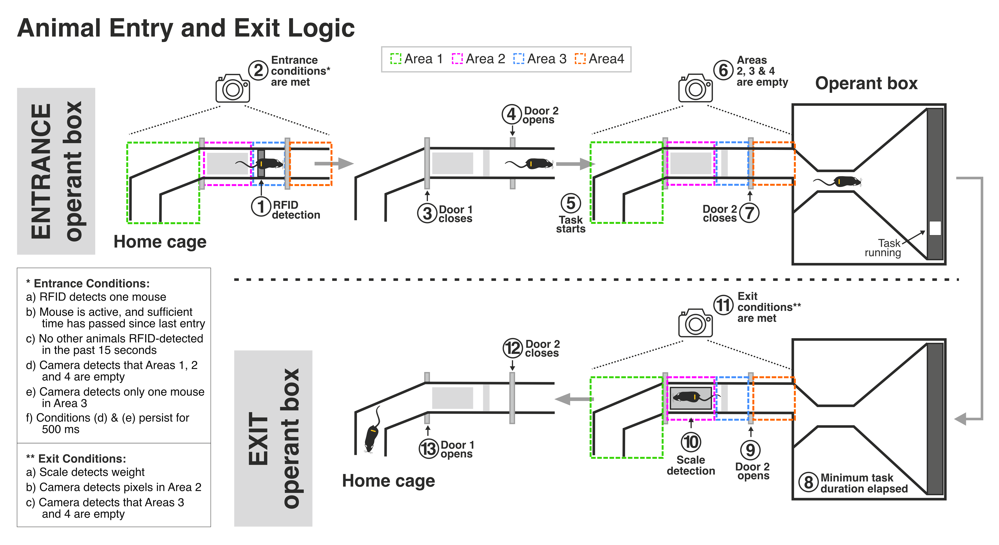
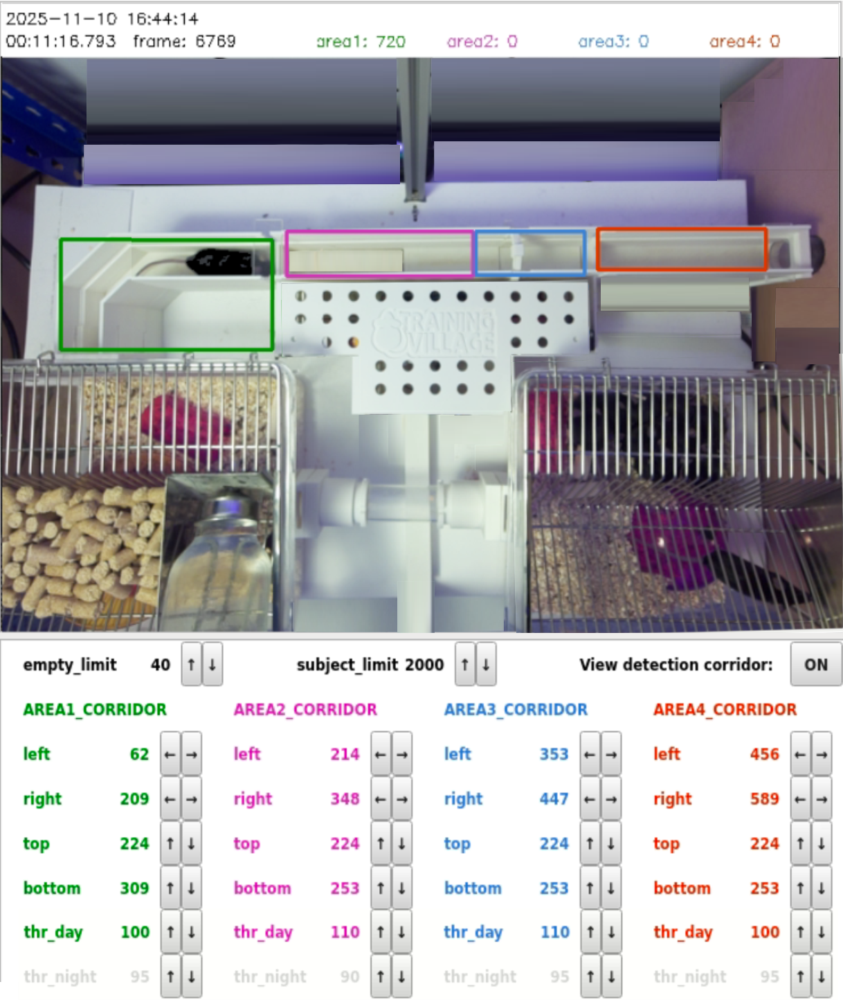
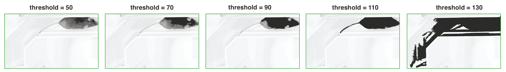
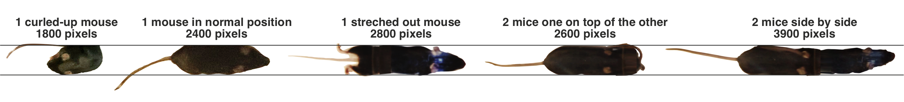
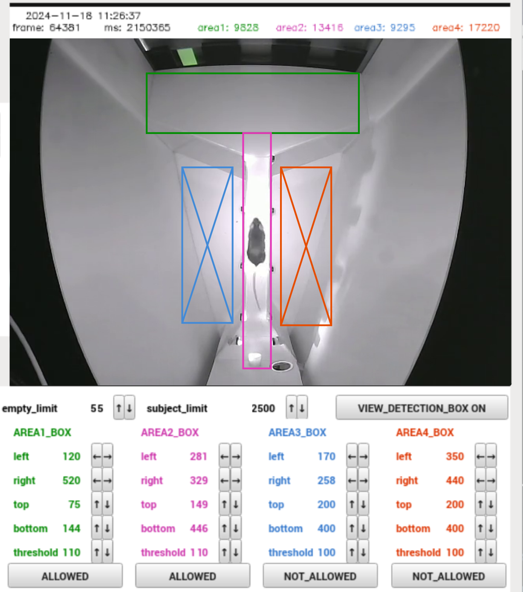

Animal Detection Setup
An automated animal detection algorithm operates continuously on both the corridor camera and the behavioral box camera. The algorithm processes each image by converting it to black-and-white pixels based on a set luminance threshold (pixels above the threshold are marked white, and those below are marked black). By counting the black pixels, the system determines whether a specific area is empty, contains one mouse, or holds multiple animals.
Detection in the Corridor
The corridor is typically constructed with white filament, making it easier to detect darker-colored animals, but it can also be built in black to detect light-colored animals. The detection of dark or light pixels can be adjusted simply by configuring the appropriate setting.

To set up detection in the corridor, start by configuring four designated areas (green, magenta, blue and red rectangles):

Area 1: Should cover the corridor section before the first door.Area 2: Should span from the first door up to the beginning of Area 3.Area 3: Starts where Area 2 ends and extends to the second door. It should be large enough to fully contain one mouse but not exceed that size significantly. This is the area where the RFID reader is located.Area 4: Should cover the corridor section after the second door.
When an animal is detected by the RFID antenna, the system checks the status of all four areas.For an animal to be permitted entry, Areas 1, 2, and 4 must be empty, with pixel detection occurring only in Area 3. These conditions must hold for 500 ms, and no other animal should have been detected by the RFID in the last 15 seconds. These timing parameters are adjustable in the settings section.
Each area has separate threshold values for day and night. At night, illumination comes solely from an infrared lamp, while during the day, the room lights provide additional lighting, creating slight variations in brightness. Different thresholds can be set for each area to account for any reflections or shadows affecting illumination. Accurate threshold configuration is essential for reliable detection.
To set these thresholds, allow an animal to enter the corridor and activate VIEW_DETECTION to visualize detected pixels. Ideally, only the animal’s pixels should be detected, with minimal detection outside of the animal. This visual feedback helps adjust the thresholds for optimal detection accuracy.

We have identified the number of pixels occupied by each animal; now we need to determine how many animals are in the corridor.
empty_limit: Defines the maximum pixel count that can be detected while confirming the area is empty. Allowing for up to 40 or 50 pixels due to minor noise or artifacts is usually reasonable.subject_limit: Defines the maximum pixel count for one animal. This threshold depends on the animals’ size. To determine it, observe the pixel count for a single animal as it moves within the corridor, noting that it may vary based on posture (crouched or stretched out) and individual size. Similarly, record the combined pixel count for two animals in the corridor.

In this example, one animal might range between 1800 and 2800 pixels, while two animals might range from 2600 to 3600 pixels. Setting this threshold to around 2500 pixels provides a safe margin, though there may be cases where a single animal is not allowed to enter if it stretches fully. Two animals can be detected as one if perfectly aligned, one on top of the other. To minimize such errors, the algorithm requires that the camera detection conditions be stable for at least 500 ms after an RFID detection, as it is unlikely for two animals to stay perfectly aligned for that duration.
Detection in the Behavioral Box

It is possible to define up to 4 areas within the behavioral box. These areas can be of two types:
ALLOWED: A zone where the animal is expected to be. An alarm will trigger if the detected pixels exceed the subject_limit, indicating the possibility that two animals may have entered the behavioral box simultaneously by mistake.NOT_ALLOWED: A zone where the animal should not be. If the animal is detected in one of these zones, a Telegram alarm will be sent.
The process for configuring these values is similar to that of the corridor camera. In the example image, the corridor and the touchscreen area are elevated and represent the zones where animals are expected to be. The blue and red zones, on the floor, should remain free of animals unless one has jumped into them.